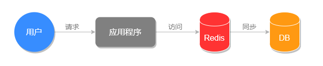
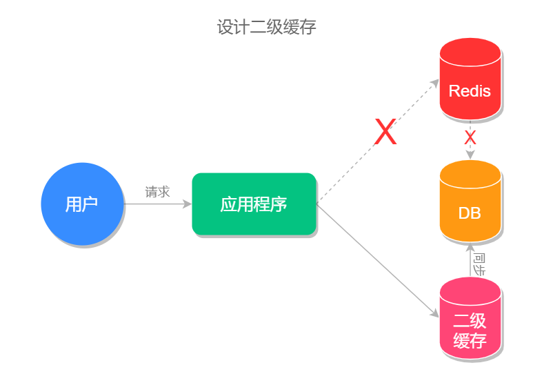
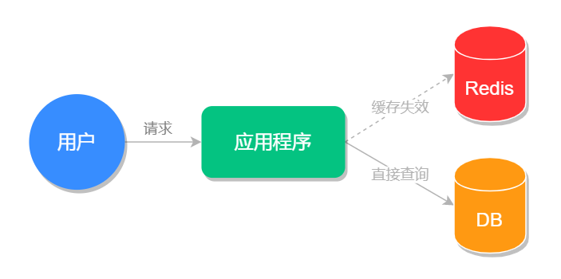

- 01 Redis 是如何执行的.md.html
- 02 Redis 快速搭建与使用.md.html
- 03 Redis 持久化——RDB.md.html
- 04 Redis 持久化——AOF.md.html
- 05 Redis 持久化——混合持久化.md.html
- 06 字符串使用与内部实现原理.md.html
- 07 附录：更多字符串操作命令.md.html
- 08 字典使用与内部实现原理.md.html
- 09 附录：更多字典操作命令.md.html
- 10 列表使用与内部实现原理.md.html
- 11 附录：更多列表操作命令.md.html
- 12 集合使用与内部实现原理.md.html
- 13 附录：更多集合操作命令.md.html
- 14 有序集合使用与内部实现原理.md.html
- 15 附录：更多有序集合操作命令.md.html
- 16 Redis 事务深入解析.md.html
- 17 Redis 键值过期操作.md.html
- 18 Redis 过期策略与源码分析.md.html
- 19 Redis 管道技术——Pipeline.md.html
- 20 查询附近的人——GEO.md.html
- 21 游标迭代器（过滤器）——Scan.md.html
- 22 优秀的基数统计算法——HyperLogLog.md.html
- 23 内存淘汰机制与算法.md.html
- 24 消息队列——发布订阅模式.md.html
- 25 消息队列的其他实现方式.md.html
- 26 消息队列终极解决方案——Stream（上）.md.html
- 27 消息队列终极解决方案——Stream（下）.md.html
- 28 实战：分布式锁详解与代码.md.html
- 29 实战：布隆过滤器安装与使用及原理分析.md.html
- 30 完整案例：实现延迟队列的两种方法.md.html
- 31 实战：定时任务案例.md.html
- 32 实战：RediSearch 高性能的全文搜索引擎.md.html
- 33 实战：Redis 性能测试.md.html
- 34 实战：Redis 慢查询.md.html
- 35 实战：Redis 性能优化方案.md.html
- 36 实战：Redis 主从同步.md.html
- 37 实战：Redis哨兵模式（上）.md.html
- 38 实战：Redis 哨兵模式（下）.md.html
- 39 实战：Redis 集群模式（上）.md.html
- 40 实战：Redis 集群模式（下）.md.html
- 41 案例：Redis 问题汇总和相关解决方案.md.html
- 42 技能学习指南.md.html
- 43 加餐：Redis 的可视化管理工具.md.html
- 捐赠
41 案例：Redis 问题汇总和相关解决方案
本文收集了一些 Redis 使用中经常遇到的一些问题，和与之相对应的解决方案，这些内容不但会出现在实际工作中，也是面试的高频问题，接下来一起来看。
缓存雪崩
缓存雪崩是指在短时间内，有大量缓存同时过期，导致大量的请求直接查询数据库，从而对数据库造成了巨大的压力，严重情况下可能会导致数据库宕机的情况叫做缓存雪崩。
我们先来看下正常情况下和缓存雪崩时程序的执行流程图，正常情况下系统的执行流程如下图所示：

缓存雪崩的执行流程，如下图所示：
以上对比图可以看出缓存雪崩对系统造成的影响，那如何解决缓存雪崩的问题？
缓存雪崩的常用解决方案有以下几个。
加锁排队
加锁排队可以起到缓冲的作用，防止大量的请求同时操作数据库，但它的缺点是增加了系统的响应时间，降低了系统的吞吐量，牺牲了一部分用户体验。
加锁排队的代码实现，如下所示：
// 缓存 key
String cacheKey = "userlist";
// 查询缓存
String data = jedis.get(cacheKey);
if (StringUtils.isNotBlank(data)) {
// 查询到数据，直接返回结果
return data;
} else {
// 先排队查询数据库，在放入缓存
synchronized (cacheKey) {
data = jedis.get(cacheKey);
if (!StringUtils.isNotBlank(data)) { // 双重判断
// 查询数据库
data = findUserInfo();
// 放入缓存
jedis.set(cacheKey, data);
}
return data;
}
}
以上为加锁排队的实现示例，读者可根据自己的实际项目情况做相应的修改。
随机化过期时间
为了避免缓存同时过期，可在设置缓存时添加随机时间，这样就可以极大的避免大量的缓存同时失效。
示例代码如下：
// 缓存原本的失效时间
int exTime = 10 * 60;
// 随机数生成类
Random random = new Random();
// 缓存设置
jedis.setex(cacheKey, exTime+random.nextInt(1000) , value);
设置二级缓存
二级缓存指的是除了 Redis 本身的缓存，再设置一层缓存，当 Redis 失效之后，先去查询二级缓存。
例如可以设置一个本地缓存，在 Redis 缓存失效的时候先去查询本地缓存而非查询数据库。
加入二级缓存之后程序执行流程，如下图所示：

缓存穿透
缓存穿透是指查询数据库和缓存都无数据，因为数据库查询无数据，出于容错考虑，不会将结果保存到缓存中，因此每次请求都会去查询数据库，这种情况就叫做缓存穿透。
缓存穿透执行流程如下图所示：
其中红色路径表示缓存穿透的执行路径，可以看出缓存穿透会给数据库造成很大的压力。
缓存穿透的解决方案有以下几个。
使用过滤器
我们可以使用过滤器来减少对数据库的请求，例如使用我们前面章节所学的布隆过滤器，我们这里简单复习一下布隆过滤器，它的原理是将数据库的数据哈希到 bitmap 中，每次查询之前，先使用布隆过滤器过滤掉一定不存在的无效请求，从而避免了无效请求给数据库带来的查询压力。
缓存空结果
另一种方式是我们可以把每次从数据库查询的数据都保存到缓存中，为了提高前台用户的使用体验 (解决长时间内查询不到任何信息的情况)，我们可以将空结果的缓存时间设置得短一些，例如 3~5 分钟。
缓存击穿
缓存击穿指的是某个热点缓存，在某一时刻恰好失效了，然后此时刚好有大量的并发请求，此时这些请求将会给数据库造成巨大的压力，这种情况就叫做缓存击穿。
缓存击穿的执行流程如下图所示：

它的解决方案有以下 2 个。
加锁排队
此处理方式和缓存雪崩加锁排队的方法类似，都是在查询数据库时加锁排队，缓冲操作请求以此来减少服务器的运行压力。
设置永不过期
对于某些热点缓存，我们可以设置永不过期，这样就能保证缓存的稳定性，但需要注意在数据更改之后，要及时更新此热点缓存，不然就会造成查询结果的误差。
缓存预热
首先来说，缓存预热并不是一个问题，而是使用缓存时的一个优化方案，它可以提高前台用户的使用体验。
缓存预热指的是在系统启动的时候，先把查询结果预存到缓存中，以便用户后面查询时可以直接从缓存中读取，以节约用户的等待时间。
缓存预热的执行流程，如下图所示：
缓存预热的实现思路有以下三种：
- 把需要缓存的方法写在系统初始化的方法中，这样系统在启动的时候就会自动的加载数据并缓存数据；
- 把需要缓存的方法挂载到某个页面或后端接口上，手动触发缓存预热；
- 设置定时任务，定时自动进行缓存预热。
小结
本文介绍了缓存雪崩产生的原因是因为短时间内大量缓存同时失效，而导致大量请求直接查询数据库的情况，解决方案是加锁、随机设置过期时间和设置二级缓存等；还介绍了查询数据库无数据时会导致的每次空查询都不走缓存的缓存穿透问题，解决方案是使用布隆过滤器和缓存空结果等；同时还介绍了缓存在某一个高并发时刻突然失效导致的缓存击穿问题，以及解决方案——加锁、设置永不过期等方案，最后还介绍了优化系统性能的手段缓存预热。
© 2019 - 2023 Liangliang Lee. Powered by gin and hexo-theme-book.